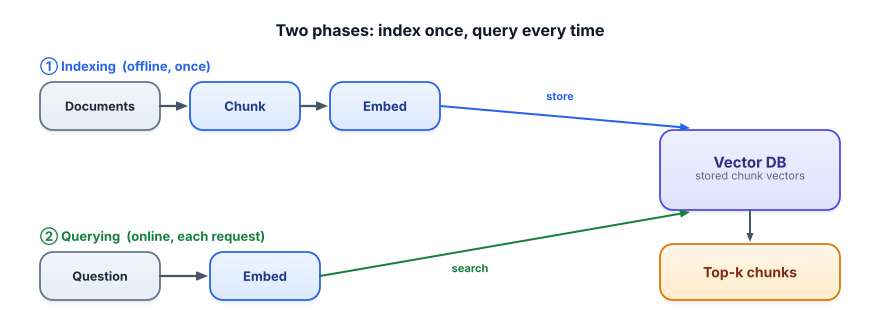

Embeddings for retrieval
You already understand embeddings (Track 1.3). Here you put them to work as the search engine of RAG — turning every chunk into a point in meaning-space once, then finding the nearest points to each question in milliseconds.
Retrieval is embedding similarity at scale
The core of RAG retrieval is exactly the cosine similarity you met in Track 1: embed the chunks, embed the query, find the chunks whose vectors point most like the query’s. The only new ideas are operational: you embed all your chunks once ahead of time (indexing), and at query time you embed just the question and search. Splitting work this way is what makes retrieval fast.

An embedding model maps text to a vector so that similar meanings get similar directions. In retrieval you use it twice: to embed every chunk at index time, and to embed the query at query time. A hard rule: you must use the same embedding model for both — vectors from different models live in different, incomparable spaces. Most retrieval also normalizes vectors to length 1, which makes the fast dot product equal to cosine similarity.
Embedding your documents with one model and your queries with another (or changing the model after indexing without re-embedding) silently destroys retrieval — the vectors aren’t comparable, so “nearest” is meaningless. Same model for docs and queries, and re-embed everything if you switch models.
Choosing an embedding model
There are many free, open-source embedding models. They differ along axes that actually matter for your system:
| Consideration | What to know |
|---|---|
| Quality vs. size/speed | Bigger models retrieve better but are slower and cost more to run. A small model like all-MiniLM-L6-v2 (384-dim) is a great, free starting point. |
| Max sequence length | Each model truncates input past a limit. Your chunks must fit — a 512-token model silently cuts off longer chunks, losing their tail. |
| Domain match | A model trained on general web text may underperform on legal, medical, or code. Pick (or fine-tune) for your domain when it matters. |
| Multilingual | If users query in multiple languages, use a multilingual model so cross-language matches work. |
| Symmetric vs. asymmetric | Some models (e.g. E5, BGE) expect you to prefix queries and passages differently (like "query: …" / "passage: …"). Follow the model card. |
The retrieval half of RAG, slightly grown from Lesson 3.1: embed many chunks once, then rank by cosine. Normalizing means the dot product is cosine.
import numpy as np
from sentence_transformers import SentenceTransformer
model = SentenceTransformer("all-MiniLM-L6-v2")
chunks = [
"Returns are free within 30 days of delivery.",
"The X200 has a 3-year limited warranty.",
"To cancel your subscription, open Settings > Billing.",
"The motor is rated at 1200 watts.",
]
# INDEX (once): embed all chunks, normalized so dot product = cosine
index = model.encode(chunks, normalize_embeddings=True) # shape (4, 384)
def search(query, k=2):
q = model.encode([query], normalize_embeddings=True)[0] # SAME model
scores = index @ q # cosine for every chunk
order = np.argsort(scores)[::-1][:k]
return [(chunks[i], round(float(scores[i]), 3)) for i in order]
print(search("how do I stop paying?"))
# -> [("To cancel your subscription...", 0.62), ("Returns are free...", 0.18)]Note the winning chunk shares almost no words with the query (“stop paying” vs “cancel subscription”) — that’s semantic retrieval doing its job. For a few thousand chunks this brute-force search is plenty fast; beyond that you’ll want a real index (next lesson).
- Retrieval = cosine similarity between query and chunk embeddings, with chunks embedded once at index time.
- Same embedding model for documents and queries — different models produce incomparable vectors.
- Normalize vectors so the fast dot product equals cosine similarity.
- Pick a model on quality vs. speed, max sequence length (chunks must fit!), domain, and language.
- Some models need query/passage prefixes — read the model card.
Retrieval quality suddenly drops after a teammate “upgraded the embedding model” in the query path but didn’t touch the stored document vectors. Why?
1. In the example, why does “how do I stop paying?” match the cancel-subscription chunk over the warranty chunk, despite sharing no words?
2. Your chunks are ~800 tokens but your embedding model’s max input is 512 tokens. What happens, and how do you fix it?
3. You want to keep storage small but retrieval good. Name two levers and their trade-offs.
▸ Show solutions & reasoning
1. The embedding model places “stop paying” and “cancel your subscription” near each other in meaning-space because they express the same intent — billing cessation — even with no shared words. The warranty chunk is about a different topic, so its vector points elsewhere and scores lower. Semantic match is about direction in meaning-space, not word overlap.
2. The model silently truncates each chunk to 512 tokens, so the last ~300 tokens of every chunk are never embedded — any fact living there becomes unretrievable. Fix by making chunks fit the model’s limit (smaller chunks) or choosing a model with a longer max length. Always check that chunk size ≤ model max length.
3. (a) Smaller embedding dimension (or a smaller model): less storage and faster search, but usually slightly lower retrieval quality. (b) Quantizing the vectors (e.g., store as int8): big storage/speed savings for a small accuracy hit. Both trade a little quality for a lot of footprint — measure with evaluation before committing.
Two things separate people who “use embeddings” from people who get retrieval right. First, asymmetric retrieval: a question (“how do I cancel?”) and a passage (“To end your plan, go to Settings…”) are different kinds of text, and several modern models are trained to embed them with explicit instructions or prefixes (E5’s "query:"/"passage:", BGE’s instruction prompts). Using the wrong prefix — or none — quietly costs you recall. Always read the model card and follow its recipe; a “bad model” is often just a mis-used one.
Second, measure, don’t guess. Intuition about which embedding model is best is unreliable; the leaderboard for your data is your own data. Public benchmarks like MTEB are a starting filter, but the real test is building a small labeled set of (query, relevant-chunk) pairs and measuring recall@k for each candidate model on your corpus (Lesson 3.8). Teams routinely find a tiny free model beats a famous one on their domain. Embedding choice is an empirical decision, not a brand decision — and getting it right is one of the highest-leverage things you can do in RAG.
Brute-force cosine over a NumPy array is fine for thousands of chunks. For millions, you need a purpose-built store with a clever index. Next: vector databases & indexes.